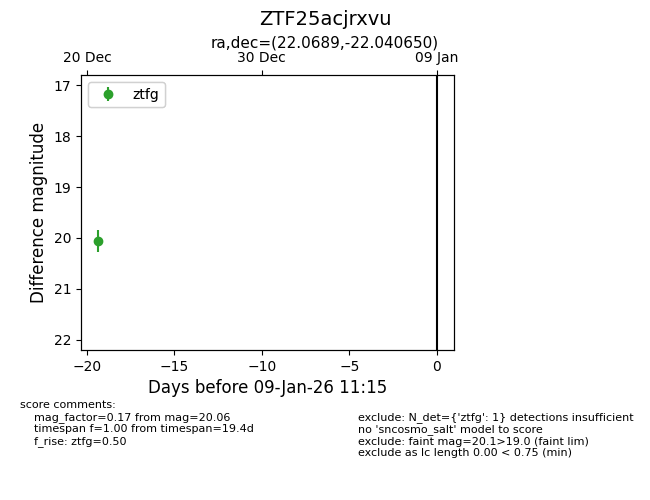
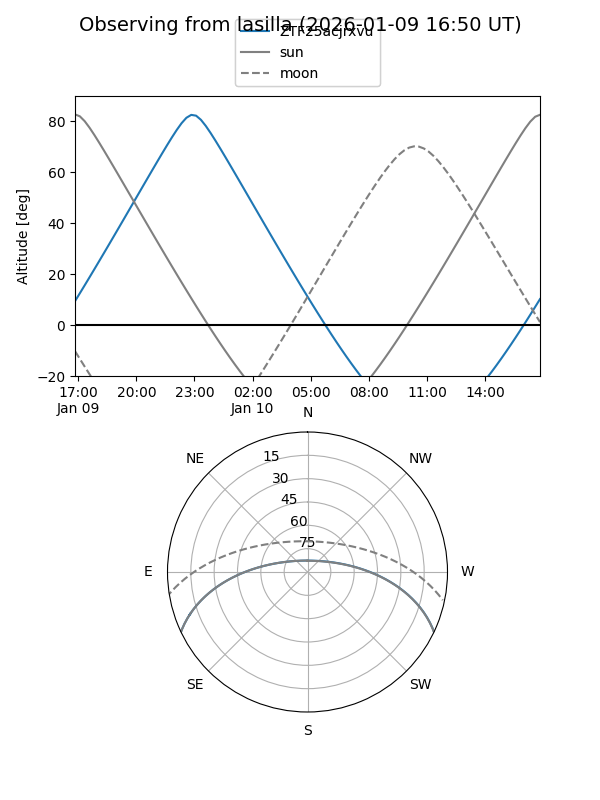
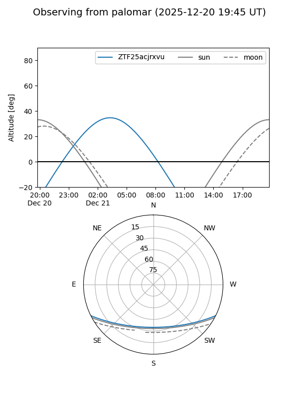

ZTF25acjrxvu
Target ZTF25acjrxvu at 2025-12-21 03:13
Aliases and brokers:
FINK: fink-portal.org/ZTF25acjrxvu
Lasair: lasair-ztf.lsst.ac.uk/objects/ZTF25acjrxvu
ALeRCE: alerce.online/object/ZTF25acjrxvu
alt names
ZTF25acjrxvu (ztf,fink_ztf)
Coordinates:
equatorial (ra, dec) = 22.0689,-22.04065
equatorial (HMS+DMS) = 01:28:16.54,-22:02:26.34
galactic (l, b) = (183.6373,-80.20630)
Flags:
Photometry:
last ztfg=20.06
1 ztfg detections
Lightcurve

Visibility


Additional plots